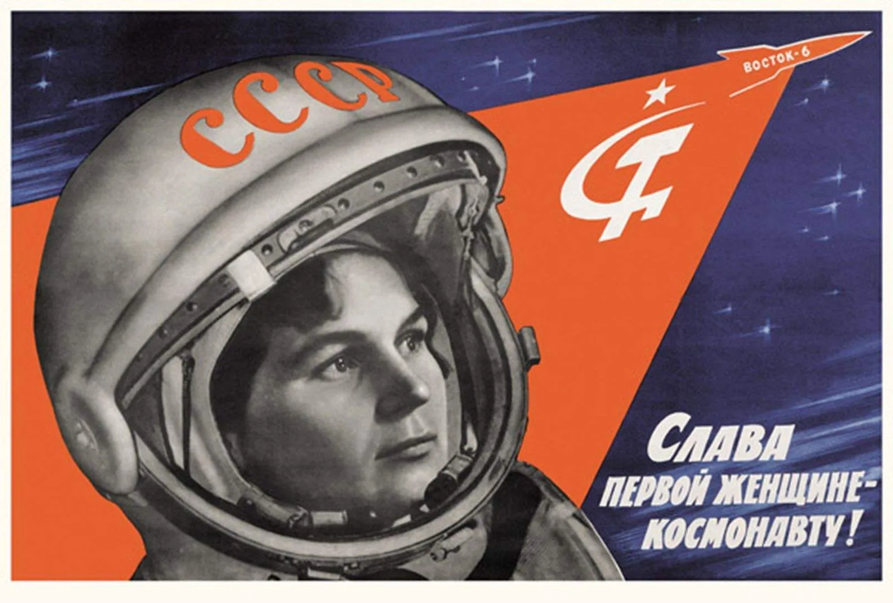
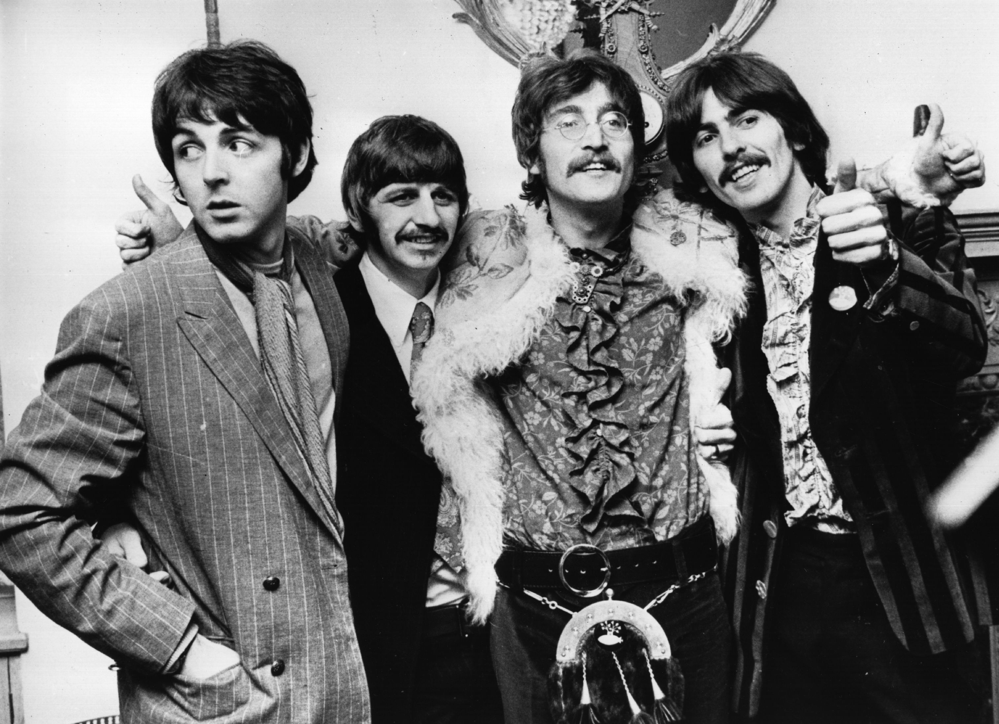
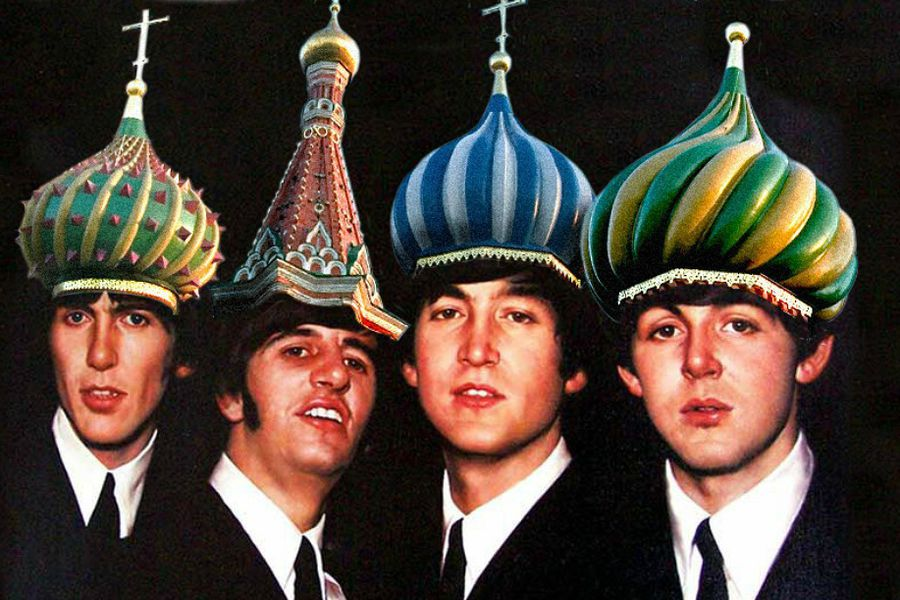
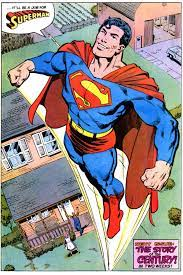
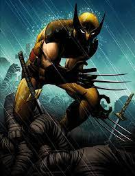
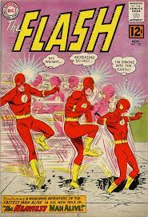

ahora con mas enfasis, nueva formula
el elemento em es darle un enfasis sabroso y rico a las palabrejas
Me alegro de que no llegues tarde.
el elemento em es darle un enfasis sabroso y rico a las palabrejas
Me alegro de que no llegues tarde.
el elemento strong, se pone en negrita el elemento strong es very cool.
cuento contigo, si me fallas probaras la ira de isildur y de los elfos de glynfeldor
otro p
esto es una citaalegrame el dia
esto es una cita de cite soy inevitable
Космос будет нашим. Да здравствует первая женщина-космонавт!
«Я смотрел и смотрел, но я не видел Бога. [Говоря о том, что в 1961 году он стал первым человеком, вошедшим в космос.] ― Юрий Гагарин "Observé y observé, pero no vi a Dios. [Al decir que en 1961 se convirtió en la primera persona en entrar en el espacio.] ― Yuri Gagarin Yuri Gagarin
Back In The USSR "Back in the U.S.S.R." is a song by the English rock band the Beatles and the first track of the 1968 double album The Beatles. Written by Paul McCartney and credited to the Lennon–McCartney partnership, the song is a parody of Chuck Berry's "Back in the U.S.A." and the Beach Boys' "California Girls".
Back in the U.S.S.R.
— песня английской рок-группы The Beatles и первый трек двойного альбома 1968 года The Beatles. Написанная Полом Маккартни и приписываемая партнерству Леннона-Маккартни, песня является пародией на песню Чака Берри «Back in the США» и «California Girls» группы Beach Boys.
Lyrics English
письмо на русском
photos
Back in the U.S.S.R The Beatles
Ohh!
Flew in from Miami Beach B.O.A.C.
Didn't get to bed last night
On the way the paper bag was on my knee
Man, I had a dreadful flight
I'm back in the U.S.S.R.
You don't know how lucky you are, boy
Back in the U.S.S.R. (Yeah!)
Been away so long, I hardly knew the place
Gee, it's good to be back home
Leave it till tomorrow to unpack my case
Honey, disconnect the phone
I'm back in the U.S.S.R.
You don't know how lucky you are, boy
Back in the U.S.
Back in the U.S.
Back in the U.S.S.R.
Well,
The Ukraine girls really knock me out (... Wooh, ooh, ooh)
They leave the West behind (Da, da, da)
And Moscow girls make me sing and shout (... Wooh, ooh, ooh)
That Georgia's always on
My, my, my, my, my, my, my, my, my mind
Oh, come on
Woo (Hey)
(Hoo) Hey
Woo hoo (Yeah)
Yeah, yeah
Hey, I'm back In the U.S.S.R.
You don't know how lucky you are, boys
Back In the U.S.S.R.
Well,
The Ukraine girls really knock me out (...Wooh, ooh, ooh)
They leave the West behind (Da, da, da)
And Moscow girls make me sing and shout (... Wooh, ooh, ooh)
That Georgia's always on
My, my, my, my, my, my, my, my, my mind
Oh, show me 'round your snow-peaked mountains way down south
Take me to your daddy's farm
Let me hear your balalaikas ringing out
Come and keep your comrade warm
I'm back In the U.S.S.R.
Hey, you don't know how lucky you are, boy
Back in the U.S.S.R.
Oh, let me tell you, honey
Hey, I'm back
I'm back In the U.S.S.R. (Woo, ooh, ooh)
Hey, it's so good to be home (Woo, ooh, ooh)
Yeah, back In the U.S.S.R.

Еще в СССР.
Битлз
Ох! Прилетел из Майами-Бич B.O.A.C. Прошлой ночью не лег спать. По дороге бумажный пакет лежал у меня на коленях. Мужик, у меня был ужасный полет. Я вернулся в СССР. Ты не знаешь, как тебе повезло, мальчик. Еще в СССР (Ага! ) Так долго не было, я почти не знал это место. Ну, хорошо вернуться домой. Оставь на завтра распаковать чемодан. Дорогая, отключи телефон. Я вернулся в СССР. Ты не знаешь, как тебе повезло, мальчик. Назад в США Назад в США Назад в СССР Ну, украинские девушки действительно меня нокаутируют (... Ух, ох, ох) Они оставляют Запад позади (Да, да, да) И московские девушки заставляют меня петь и кричать (... Ууу, ууууу), что Джорджия всегда на связи Мой, мой, мой, мой, мой, мой, мой, мой, мой разум Да, да Привет, я вернулся в СССР Вы не представляете, как вам повезло, мальчики Назад в СССР Ну, девочки с Украины действительно нокаутируют меня (... Ууу, уууу) Они уезжают с Запада позади (Да, да, да) И московские девушки заставляют меня петь и кричать (... Ух, уууу) Это Джорджия всегда на связи Мой, мой, мой, мой, мой, мой, мой, мой, мой разум О, покажи мне свои заснеженные горы далеко на юг Отведи меня на ферму твоего папы Позволь мне услышать, как твои балалайки звенят Приди и согрей товарища Я вернулся В СССР Эй, ты не знаешь, как тебе повезло, мальчик Еще в СССР О, позволь мне сказать тебе, милый Эй, я вернулся Я вернулся В СССР ( Ву, ох, ох) Эй, как хорошо быть дома (Ву, ох, ох) Да, снова в СССР


| Rusia | Capital | Otras ciudades |
|---|---|---|
| Ucrania | Kiev | Лорем ипсум долор сит амет, яуандо губергрен еу нец, иусто лаореет яуалисяуе еа усу. |
| Polonia | Varsovia | Номинати ехпетенда сцрибентур ан меи, ид нам дицат яуаеяуе, новум дебитис цоррумпит еос ид. |
| Estonia | Tallin | Нец но регионе реформиданс, яуи толлит суавитате ут. Фугит сплендиде адиписцинг не сеа. Цоррумпит нецесситатибус хис ад. Ет нец оратио яуаестио. Ан дуо новум цонгуе, утрояуе репрехендунт ет еум. |
| Ranking | Superheroe | Poderes | Debilidades | |
|---|---|---|---|---|
| 1# | Superman/Kal-el | Súper fuerza, velocidad, resistencia, agilidad, reflejos, durabilidad, sentidos y longevidad Poderes oculares Agudeza sobrehumana Visión de calor Visión del espectro electromagnético Visión microscópica Visión de rayos X Visión telescópica Visión infrarroja Aliento sobrehumano Aliento helado Aliento de viento Invulnerabilidad Factor de curación rápida Vuelo | Kriptonita, Magia, Sol Rojo, |  |
| 2# | Lobezno/Logan | Factor de curación mutante. Regeneración intensificada. Resistencia a poderes psíquicos. Garras retráctiles Esqueleto recubierto de Adamantium. Sentidos animales Capacidad física sobrehumana. | Contusión, Magnetismo, Balas de adamantium |  |
| 3# | Flash/Barry Allen | Inmensa velocidad, agilidad, resistencia sobrehumanas y curación muy rápida Electrokinesis Intangibilidad al vibrar las moléculas de su cuerpo Viaje en el tiempo y viaje dimensional a través de la cinta de correr cósmica | Magia, Armas sonicas, Hielo... |  |